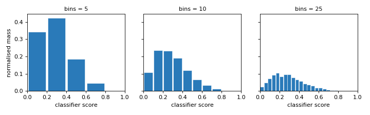
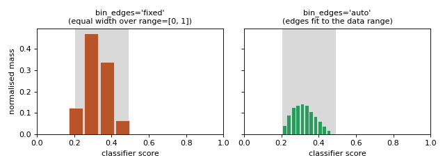
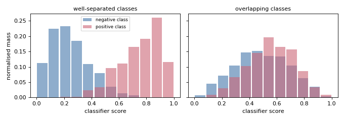
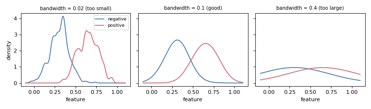
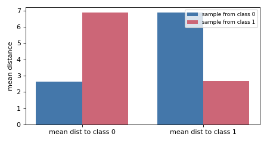
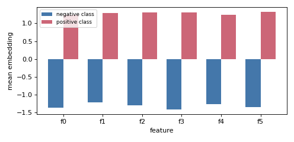
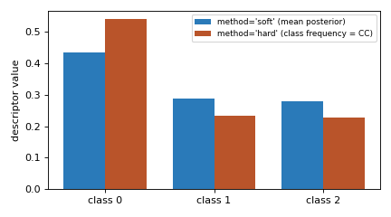

9.1.1. Representations#
Representations turn a sample of instances (or classifier scores) into the fixed-length descriptor that a distribution-matching quantifier compares. They are what specialises a single matching skeleton into different methods: swapping the representation is exactly what turns the same mixture-matching idea into HDy, EDy, MMD or KDEy.
9.1.1.1. Role and mechanism#
A representation \(r(\cdot)\) maps a set of instances to a vector, so that a
candidate prevalence \(p\) produces a mixed representation
\(\sum_c p_c\, r_c\) from the per-class descriptors \(r_c\). The
quantifier then searches for the \(p\) whose mixture best matches the test
descriptor \(r_U\) under a chosen loss. Fitting a representation computes the
per-class descriptors (class_representations_); transform produces the
descriptor of a new sample. BaseRepresentation defines the common
fit / transform interface; custom representations subclass it.
The sections below describe each representation type and the descriptor it produces; the summary table at the end compares them and explains how to choose.
9.1.1.2. Histogram representation#
HistogramRepresentation bins the classifier scores (or features) and
stores one normalised histogram per class. It is the most widely used
representation, and its two most important parameters — bins and
bin_edges — are easiest to understand by seeing the descriptor they produce.
``bins`` — resolution. bins sets how many intervals the score range is
split into. Few bins give a coarse, stable summary; many bins capture fine
structure but need more data to fill each bin reliably.
(Source code, png, hires.png, pdf)
{kind=link}
{kind=link}

More bins means a finer (but noisier) summary of the same scores.#
``bin_edges`` — where the bins are placed. With 'fixed' (the default) the
bins are equal-width over the range parameter ([0, 1] by default), so
bins outside the region where the data actually falls stay empty and are wasted.
With 'auto' the edges are learned at fit time from the data range, so all
bins are packed where the scores actually are — giving more usable resolution on
skewed or concentrated score distributions. The grey band marks the true data
range.
(Source code, png, hires.png, pdf)
{kind=link}
{kind=link}

bin_edges='fixed' wastes bins outside the data; 'auto' adapts.#
Class-conditional distributions — what gets stored. A fitted
HistogramRepresentation keeps one normalised histogram per class
(class_representations_). The descriptor is discriminative only when those
per-class distributions differ: when the classifier separates the classes the
histograms barely overlap (easy to quantify), and when it does not they look
alike (hard), regardless of how the bins are configured.
(Source code, png, hires.png, pdf)
{kind=link}
{kind=link}

One histogram per class is stored; matching is easy only when they differ.#
The remaining parameters are minor: for a single score mode='onehot' yields
essentially the same per-bin vector as the default 'histogram';
laplace_smoothing=True adds a small floor that removes empty bins (stabilising
ratio- and log-based distances such as Hellinger); and features selects which
columns are histogrammed.
9.1.1.3. Density (KDE) representation#
KDERepresentation replaces the bins with a smooth per-class kernel
density over the posteriors. bandwidth is its key control: too small and each
class density spikes on its training points (over-fitting); too large and the
class densities blur together, erasing the separation the quantifier relies on.
(Source code, png, hires.png, pdf)
{kind=link}
{kind=link}

bandwidth trades off over-fitting (left) against over-smoothing (right).#
Unlike histograms, the KDE is smooth and multivariate, so it scales to several classes on the posterior simplex where bin-based representations fragment.
9.1.1.4. Distance representation#
DistanceRepresentation summarises a sample by its mean distance to
each class, producing one (n_classes,) descriptor. It carries no per-bin
shape, but it discriminates because a sample sits closer (on average) to its own
class — these distances are the terms of the energy-distance objective.
(Source code, png, hires.png, pdf)
{kind=link}
{kind=link}

The descriptor is a sample’s mean distance to each class — smallest to its own.#
The metric parameter sets the ground distance (Euclidean, Manhattan, …).
9.1.1.5. Kernel mean representation#
KernelMeanRepresentation embeds a whole sample as a single point — its
mean embedding in a reproducing-kernel Hilbert space (the mean feature vector
under a linear kernel). Each class is summarised by its mean embedding, and MMD
matches the test embedding to a mixture of the class embeddings.
(Source code, png, hires.png, pdf)
{kind=link}
{kind=link}

Each class is one mean-embedding vector; MMD matches the test mixture to these.#
The kernel / gamma parameters choose the RKHS (an 'rbf' kernel makes
the matching universal, capturing all moments rather than just the mean).
9.1.1.6. Prediction representation#
PredictionRepresentation summarises classifier outputs as either the
mean posterior (method='soft') or the class-frequency of the argmax labels
(method='hard', i.e. Classify-and-Count). The hard descriptor discards
confidence and is more peaked toward the majority predicted class. These
descriptors feed the constrained-regression counting methods.
(Source code, png, hires.png, pdf)
{kind=link}
{kind=link}

'soft' keeps the posterior mass; 'hard' collapses it to argmax counts.#
HardPredictionRepresentation and SoftPredictionRepresentation
are the fixed-mode variants.
9.1.1.7. Summary and how to choose#
Representation |
What it computes |
Used by |
Tuned by |
|---|---|---|---|
Per-class binned probability-mass vectors of the scores. |
DyS, HDy, HDx, GHDy, GHDx |
|
|
Per-class smooth multivariate densities over posteriors. |
KDEyML, KDEyHD, KDEyCS, GKDEyML |
|
|
Mean distance to each class (energy-distance terms). |
EDy, EDx |
|
|
Mean embedding of a sample in an RKHS. |
MMD_RKHS |
|
|
Mean posterior (soft) or class-frequency (hard) vector. |
GACC, GPACC, FM |
|
Choosing one:
Histogram — cheap and interpretable, but bin-sensitive and degrades on the high-dimensional posterior simplex; prefer it for binary score matching.
KDE — replaces bins with smooth densities and scales to several classes; use it for multiclass density matching.
Distance and kernel mean — bin-free descriptors that summarise a whole sample as a compact vector, used by the energy-distance and MMD methods.
Prediction — the soft/hard descriptors that feed the constrained-regression counting methods.
9.1.1.8. Example#
from mlquantify.representations import HistogramRepresentation
rep = HistogramRepresentation(bins=(10,))
rep.fit(train_scores, y_train)
test_representation = rep.transform(test_scores)
9.1.1.9. References#
References
González-Castro, V., Alaiz-Rodríguez, R., & Alegre, E. (2013). Class Distribution Estimation Based on the Hellinger Distance. Information Sciences, 218, 146–164. (histogram)
Moreo, A., González, P., & del Coz, J. J. (2024). Kernel Density Estimation for Multiclass Quantification. Machine Learning, 113, 3075–3107. (KDE)
Iyer, A., Nath, S., & Sarawagi, S. (2014). Maximum Mean Discrepancy for Class Ratio Estimation. ICML, 32. (kernel mean)
See also
Loss Functions and Solvers for the other two elements of the matching triple.